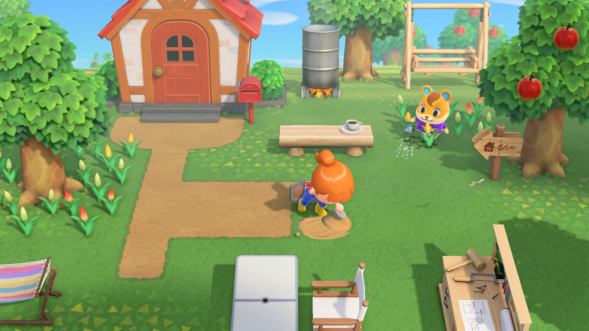

Intro

Animal Crossing es una serie de juegos de simulación desarrollado por Nintendo, en el que los jugadores asumen el papel de un personaje que se muda a una isla deshabitada, donde pueden personalizar su entorno, cultivar plantas, recolectar recursos y desarrollar su comunidad. Uno de los aspectos más característicos del juego es la interacción con los vecinos, que son animales con diversas personalidades y estilos. Cada vecino tiene características únicas, como su especie, personalidad y gustos, lo que influye en la experiencia del jugador.
Este sistema experto busca facilitar la tarea de elegir vecinos que se adapten a las necesidades y gustos de los jugadores, para esto analiza diferentes aspectos de los vecinos, como su personalidad, especie, estilo decorativo, color y las interacciones que pueden tener con otros personajes. Con esta información, el sistema ofrecerá recomendaciones personalizadas, haciendo que la experiencia en de juego sea más agradable y divertido.